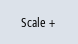

The scaling allows you to make a precise measurement of selected variables from the X time axis as well as from the Y value axis. You have the option of saving the larger or smaller display in a user-defined way
Setting | Meaning |
|---|
X minimum or
X maximum | Highest or lowest value of the X time axis. The values are used for recording when the trace is started again. |
| | Fixed scale, X axis | Values of the X time axis are kept. |
| | Strip chart recorder mode
| The values of the X time axis are used while recording. |
Y minimum or
Y maximum | Defining the highest or lowest value of the Y value axis (amplitude). |
Offset or
resolution | Defining the rms values (mean values) of the amplitudes. The scale is changed by a factor of 10. |
Scaling the time and value axis
 | 1. | A recording is opened in the "Trace" graphics window. |
| | 2. | Press the "Scale" softkey in order to scale the display. |
| | | The "Select X-Y Scaling" input window opens and the values of the X time axis are displayed. |
 | 3. | Press the "X time axis" softkey again if you wish to hide the values. |
| | | - OR - |
| | | Press the "Y selected curves" softkey to display the values of the Y value axis. |
| | | Press the softkey again if you wish to hide the values. |
| | | - OR - |
| | | You have selected both axes. |
|  | 4. | Press the "Scale +" or "Scale -" softkey until the desired scaling is reached. |
| | | - OR - |
| | | Enter the scaling values directly into the input window and select the appropriate property. |
| | 5. | Press the "Scale" softkey to save the settings. |
| | | - OR - |
| | | Press the "Adapt selected" softkey to display the selected characteristic graphs in the full graphic window. |
| | | Press the "Fit one" softkey to display the selected characteristic graphs in the full graphic window. |